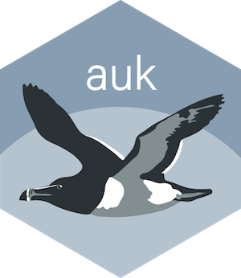

Filter to only include observations with breeding codes
Source:R/auk-breeding.R
auk_breeding.RdeBird users have the option of specifying breeding bird atlas codes for their
observations, for example, if nesting building behaviour is observed. Use
this filter to select only those observations with an associated breeding
code. This function only defines the filter and, once all filters have been
defined, auk_filter() should be used to call AWK and perform the filtering.
Arguments
- x
auk_ebdobject; reference to basic dataset file created byauk_ebd().
Examples
system.file("extdata/ebd-sample.txt", package = "auk") |>
auk_ebd() |>
auk_breeding()
#> Input
#> EBD: /github/home/R/x86_64-pc-linux-gnu-library/4.6/auk/extdata/ebd-sample.txt
#>
#> Output
#> Filters not executed
#>
#> Filters
#> Species: all
#> Countries: all
#> States: all
#> Counties: all
#> BCRs: all
#> Bounding box: full extent
#> Years: all
#> Date: all
#> Start time: all
#> Last edited date: all
#> Protocol: all
#> Project code: all
#> Duration: all
#> Distance travelled: all
#> Records with breeding codes only: yes
#> Exotic Codes: all
#> Complete checklists only: no